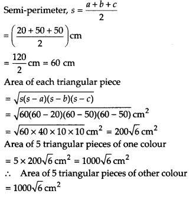

NCERT Solutions for Class 9 Maths Chapter 12 Heron’s Formula Ex 12.1 are part of NCERT Solutions for Class 9 Maths. Here we have given NCERT Solutions for Class 9 Maths Chapter 12 Heron’s Formula Ex 12.1.
NCERT Solutions for Class 9 Maths Chapter 12 Heron’s Formula Ex 12.1
Ex 12.1 Class 9 Maths Question 1.
A traffic signal board, indicating ‘SCHOOL AHEAD’, is an equilateral triangle with side a. Find the area of the signal board, using Heron’s formula.If its perimeter is 180 cm, what will be the area of the signal board?
Solution:
Let each side of the equilateral triangle be a.
Semi-perimeter of the triangle,

Ex 12.1 Class 9 Maths Question 2.
The triangular side walls of a flyover have been used for advertisements. The sides of the walls are 122 m, 22 m and 120 m (see figure). The advertisements yield an earning of ₹5000 per m² per year. A company hired one of its walls for 3 months. How much rent did it pay?
Solution:
Let the sides of the triangular will be
a = 122m, b = 12cm, c = 22m
Semi-perimeter, s = \(\frac { a+b+c }{ 2 }\)
(\(\frac { 122+120+22 }{ 4 }\))m = \(\frac { 264 }{ 2 }\) m = 132m
The area of the triangular side wall
Rent for 1 year (i.e. 12 months) per m2 = Rs. 5000
∴ Rent for 3 months per m2 = Rs. 5000 x \(\frac { 3 }{ 12 }\)
= Rent for 3 months for 1320 m2 = Rs. 5000 x \(\frac { 3 }{ 12 }\) x 1320 = Rs. 16,50,000.
Ex 12.1 Class 9 Maths Question 3.
There is a slide in a park. One of its side Company hired one of its walls for 3 months.walls has been painted in some colour with a message “KEEP THE PARK GREEN AND CLEAN” (see figure). If the sides of the wall are 15 m, 11 m and 6m, find the area painted in colour.
Solution:
Let the sides of the wall be
a = 15m, b = 11m, c = 6m
Semi-perimeter,
Thus, the required area painted in colour
= 20√2 m2
Ex 12.1 Class 9 Maths Question 4.
Find the area of a triangle two sides of which are 18 cm and 10 cm and the perimeter is 42 cm.
Solution:
Let the sides of the triangle be a =18 cm, b = 10 cm and c = x cm
Since, perimeter of the triangle = 42 cm
∴ 18cm + 10 cm + xcm = 42
x = [42 – (18 + 10)cm = 14cm
Now, semi-permimeter, s = \(\frac { 42 }{ 2 }\)cm = 21 cm
Thus, the required area of the triangle = 21\(\sqrt { 11 }\) cm2
Ex 12.1 Class 9 Maths Question 5.
Sides of a triangle are in the ratio of 12 : 17 : 25 and its perimeter is 540 cm. Find its area.
Solution:
Let the sides of the triangle be
a = 12x cm, b = 17x cm, c = 25x cm
Perimeter of the triangle = 540 cm
Now, 12x + 17x + 25x = 540
⇒ 54x = 54 ⇒ x = 10
∴ a = (12 x10)cm = 120cm,
b = (17 x 10) cm = 170 cm
and c = (25 x 10)cm = 250 cm
Now, semi-perimeter, s = \(\frac { 540 }{ 2 }\)cm = 270 cm
Ex 12.1 Class 9 Maths Question 6.
An isosceles triangle has perimeter 30 cm and each of the equal sides is 12 cm. Find the area of the triangle.
Solution:
Let the sides of an isosceles triangle be
a = 12cm, b = 12cm,c = x cm
Since, perimeter of the triangle = 30 cm
∴ 12cm + 12cm + x cm = 30 cm
⇒ x = (30 – 24) = 6
Now, semi-perimeter, s = \(\frac { 30 }{ 2 }\)cm =15 cm
Thus, the required area of the triangle = 9√15 cm2
NCERT Solutions for Class 9 Maths Chapter 12 Heron’s Formula Ex 12.2
Ex 12.2 Class 9 Maths Question 1.
A park, in the shape of a quadrilateral ABCD, has ∠C = 90°, AB = 9m,BC = 12m,CD = 5m and AD = 8 m.
How much area does it occupy?
Solution:
Given, a quadrilateral ABCD with ZC = 90°, AB = 9 m, BC = 12 m, CD = 5 m and AD = 8 m.
Let us join B and D, such that ABCD is a right angled triangle.
Now, to find the area of ∆ABD, we need the length of BD.
In right-angled ∆BCD, by Pythagoras theorem
BD2 = 502 + CD2
⇒ BD2 = 122 + 52
⇒ BD2 = 144 + 25 = 169
⇒ BD = 13 m
Now, for ∆ABD, we have
a = AB = 9 m, b = AD = 8 m, c = BD = 13 m
∴ Area of quadrilateral ABCD = area of ∆BCD + area of ∆ABD = 30 m2 + 35.5 m2
= 65.5 m2 (approx.)
Ex 12.2 Class 9 Maths Question 2.
Find the area of a quadrilateral ABCD in which AB = 3 cm, BC = 4 cm, CD = 4 cm, DA = 5 cm and AC = 5 cm.
Solution:
Given a quadrilateral ABCD with AB = 3 cm, BC = 4 cm, CD = 4 cm, DA = 5 cm and AC = 5 cm.

For ∆ABC, a = AB = 3 cm, b = BC = 4 cm and c = AC = 5 cm
Now, area of quadrilateral ABCD = area of ∆ABC + area of ∆ACD
= 6 cm2 + 9.2 cm2 = 15.2 cm2 (approx.)
Ex 12.2 Class 9 Maths Question 3.
Radha made a picture of an aeroplane with coloured paper as shown in figure. Find the total area of the paper used.

Solution:
For surface I:
It is an isosceles triangle whose sides are a = 5 cm, b = 5 cm, c = 1 cm
= (0.75 x 3.3) cm2
= 2.475 cm2 (approx.)
For surface II:
It is a rectangle with length 6.5 cm and breadth 1 cm.
∴ Area of surface II = Length x Breadth
= (6.5 x 1) cm2 = 6.5 cm2
For surface III:
It is a trapezium whose parallel sides are 1 cm and 2 cm as shown in the figure given below:
For surface IV and V:
Surface V is a right-angled triangle with base 6cm arid height 1.5 cm.
Also, area of surface IV = area of surface V
= \(\frac { 1 }{ 2 }\) x base x height
= (\(\frac { 1 }{ 2 }\) x 6 x 15) cm2 = 4.5 cm2
Thus, the total area of the paper used = (area of surface I) + (area of surface II) + (area of surface III) + (area of surface IV) + (area of surface V) = [2.475 + 6.5 + 1.3 + 4.5 + 4.5] cm2
= 19.275 cm2
= 19.3 cm2 (approx.)
Ex 12.2 Class 9 Maths Question 4.
A triangle and a parallelogram have the same base and the same area. If the sides of the triangle are 26 cm, 28 cm and 30 cm, and the parallelogram stands on the base 28 cm, find the height of the parallelogram
Solution:
For the given triangle, we have a = 28 cm, b = 30 cm, c = 26 cm
Area of the given parallelogram = Area of the given triangle
∴ Area of the parallelogram = 336 cm2
⇒ base x height = 336
⇒ 28 x h = 336, where ‘h’ be the height of the parallelogram.
⇒ h = \(\frac { 336 }{ 28 }\) = 12
Thus, the required height of the parallelogram = 12 cm
Ex 12.2 Class 9 Maths Question 5.
A rhombus shaped field has green grass for 18 cows to graze. If each side of the rhombus is 30 m and its longer diagonal is 48 m, how much area of grass field will each cow be getting?
Solution:
Here, each side of the rhombus = 30 m.
Let ABCD be the given rhombus and the diagonal, BD = 48 m
Sides ∆ABC are a = AB = 30m, b = AD = 30m, c = BD = 48m
Since, a diagonal divides the rhombus into two congruent triangles.
∴ Area of triangle II = 432 m2
Now, total area of the rhombus = Area of triangle I + Area of triangle II
= 432 m2 + 432 m2= 864 m2
Area of grass for 18 cows to graze = 864 m2
⇒ Area of grass for 1 cow to graze = \(\frac { 864 }{ 18 }\) m2
= 48 m2
Ex 12.2 Class 9 Maths Question 6.
An umbrella is made by stitching 10 triangular pieces of cloth of two different colours (see figure), each piece measuring 20 cm, 50 cm and 50 cm. How much cloth of each colour is required for the umbrella?
Solution:
Let the sides of each triangular piece be
a = 20 cm, b = 50 cm, c = 50 cm

Ex 12.2 Class 9 Maths Question 7.
A kite in the shape of a square with a diagonal 32 cm and an isosceles triangle of base 8 cm and sides 6 cm each is to be made of three different shades as shown in figure. How much paper of each shade has been used in it?
Solution:
Each shade of paper is divided into 3 triangles i.e., I, II, III
8 cm
For triangle I:
ABCD is a square [Given]
∵ Diagonals of a square are equal and bisect each other.
∴ AC = BD = 32 cm
Height of AABD = OA = (\(\frac { 1 }{ 2 }\) x 32 )cm
= 16 cm
Area of triangle I = (\(\frac { 1 }{ 2 }\) x 32 x 16 ) cm2
= 256cm2
For triangle II:
Since, diagonal of a square divides it into two congruent triangles.
So, area of triangle II = area of triangle I
∴ Area of triangle II = 256 cm2
For triangle III:
The sides are given as a = 8 cm, b = 6 cm and c = 6 cm
Thus, the area of different shades are:
Area of shade I = 256 cm2
Area of shade II = 256 cm2
and area of shade III = 17.92 cm2
Ex 12.2 Class 9 Maths Question 8.
A floral design on a floor is made up of 16 tiles which are triangular, the sides of the triangle being 9 cm, 28 cm and 35 cm (see figure). Find the cost of polishing the tiles at the rate of 50 paise per cm .
Solution:
Let the sides of the triangle be a = 9 cm, b = 28 cm, c = 35 cm
Total area of all the 16 triangles = (16 x 88.2) cm2 = 1411.2 cm2 (approx.)
Cost of polishing the tiles = Rs. 0.5 per cm2
∴ Cost of polishing all the tiles = Rs. (0.5 x 1411.2) = Rs. 705.60 (approx.)
Ex 12.2 Class 9 Maths Question 9.
A field is in the shape of a trapezium whose parallel sides are 25 m and 10 m. The non-parallel sides are 14 m and 13 m. Find the area of the field.
Solution:
Let the given field is in the form of a trapezium ABCD such that parallel sides are AB = 10 m and DC = 25 m
Non-parallel sides are AD = 13 m and BC = 14 m.
We draw BE || AD, such that BE = 13 m.
The given field is divided into two shapes (i) ∆BCE, (ii) parallelogram ABED For ∆BCE:
Sides of the triangle are a = 13 m, b = 14 m, c = 15 m
(ii) For parallelogram ABED:
Let the height of the ∆BCE corresponding to the side EC be h m.
Area of a triangle = \(\frac { 1 }{ 2 }\) x base x height
∴ \(\frac { 1 }{ 2 }\) x 15 x h = 84
⇒ (10 + \(\frac { 82\times 2 }{ 15 }\) = \(\frac { 56 }{ 5 }\)
Now, area of a parallelogram = base x height
= (10 x \(\frac { 56 }{ 5 }\)) = (2 x 56) m2 = 112 m2
So, area of the field
= area of ∆BCE + area of parallelogram ABED
= 84 m2 + 112 m2 = 196 m2
NCERT Solutions for Class 9 Maths Chapter 12 Heron’s Formula (हीरोन सूत्र) (Hindi Medium) Ex 12.1


NCERT Solutions for Class 9 Maths
- Chapter 1 Number systems
- Chapter 2 Polynomials
- Chapter 3 Coordinate Geometry
- Chapter 4 Linear Equations in Two Variables
- Chapter 5 Introduction to Euclid Geometry
- Chapter 6 Lines and Angles
- Chapter 7 Triangles
- Chapter 8 Quadrilaterals
- Chapter 9 Areas of Parallelograms and Triangles
- Chapter 10 Circles
- Chapter 11 Constructions
- Chapter 12 Heron’s Formula
- Chapter 13 Surface Areas and Volumes
- Chapter 14 Statistics
- Chapter 15 Probability
- Class 9 Maths (Download PDF)
We hope the NCERT Solutions for Class 9 Maths Chapter 12 Heron’s Formula Ex 12.1 help you. If you have any query regarding NCERT Solutions for Class 9 Maths Chapter 12 Heron’s Formula Ex 12.1, drop a comment below and we will get back to you at the earliest.